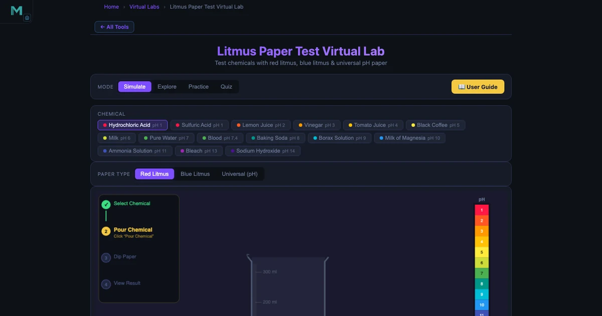
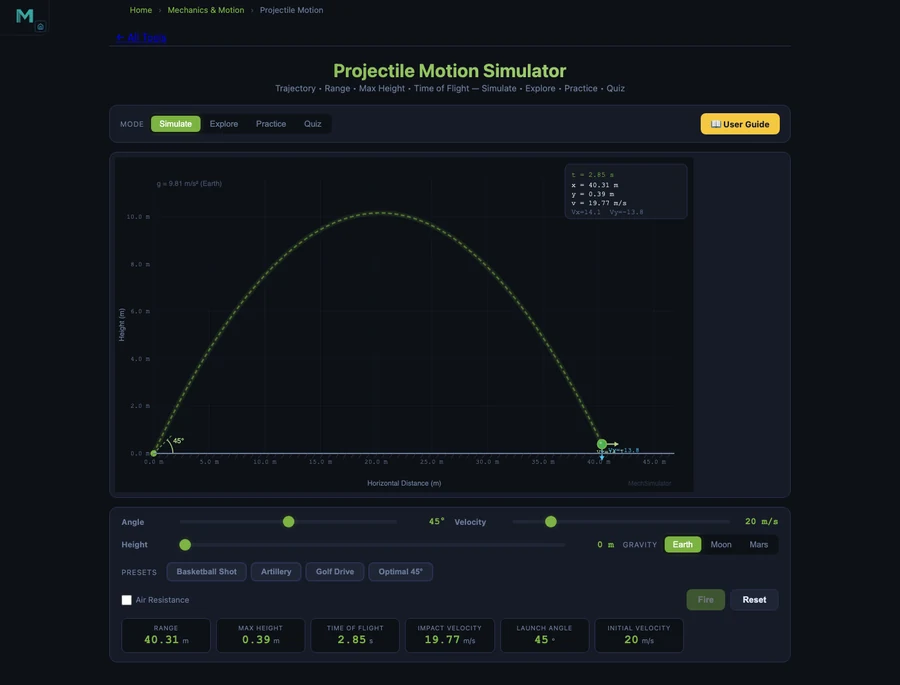

High School Science Simulators — 5 Free Virtual Labs for Every Classroom

- Five free browser-based virtual labs cover the core high school syllabus: Litmus Test (15 chemicals, pH 1–14), Chemical Bond (ionic vs covalent with ΔEN values), Projectile Motion (R = v²sin(2θ)/g), Free Fall (s = ½gt²), and Boyle’s Law (P₁V₁ = P₂V₂).
- Every tool runs instantly in any modern browser with no account, no download, and no paywall — including on school tablets and Chromebooks.
- The highest-impact way to use them is the predict-verify method: have students calculate or predict an outcome before running the simulation, which boosts retention over passive demonstration.
Every science teacher knows the moment. You’re mid-lesson on acids and bases, or bond types, or projectile motion, and a student raises a hand and asks: “Can we just try it?” In a well-resourced school, you reach for the lab trolley. In most schools, you reach for a worksheet. High school science simulators change that equation. These five free browser-based tools turn the second scenario into the first — no chemicals ordered, no lab booked, no prep period burned.
Why Science Labs Are Hard to Run at School
Here is the situation that plays out every semester. You plan a practical on acid-base indicators. The chemicals are on the order list but haven’t arrived. The lab technician is covering another class. You have 35 students, one projector, and 45 minutes. The lesson could be brilliant — students watching litmus turn colour, predicting which way it will go before they test. Instead, it becomes a copy-the-notes session.
It’s not a failure of planning. Resources are genuinely limited. Chemical safety requirements, limited lab time, large class sizes, and the sheer cost of consumables stack up against regular hands-on sessions. Virtual simulators don’t replace the smell of a real lab — but they restore the most important part of it: the student actively predicting, testing, and seeing the result. All five tools below run instantly in any modern browser. No accounts. No downloads. Open the link and you’re in.
Tool 1 — Litmus Test Simulator: The pH Scale Made Visible
The Litmus Test Simulator is the most immediately satisfying tool on this list. Students choose a chemical from a panel of fifteen — everything from Hydrochloric Acid at pH 1 to Sodium Hydroxide at pH 14 — select red or blue litmus paper, and click “Dip.” The paper changes colour with an animated dip sequence. Readouts show the chemical name, formula, pH value, and classification in real time.
The teaching value is in the contrast. Drop HCl (pH 1) onto blue litmus: it flashes red. Drop NaOH (pH 14) onto red litmus: it goes blue. Now test Pure Water (pH 7) on both papers: no change. Students who have memorised “acids turn blue litmus red” as a phrase suddenly see why that phrase exists. The weaker acids are equally instructive — Lemon Juice at pH 2, Vinegar at pH 3, Milk at pH 6 — because students start to notice the graduation in reaction strength rather than treating all acids as identical.
The simulator also includes an Explore mode with concept cards and a Practice/Quiz section, which makes it a complete revision tool, not just a demo.
Tool 2 — Chemical Bond Simulator: Electrons You Can Watch
Bond type is one of those topics where students learn the words perfectly and understand almost nothing. They can write “ionic: electron transfer” and “covalent: electron sharing” on an exam and still have no mental image of what either means. The Chemical Bond Simulator fixes that directly.
The tool displays animated electron-shell diagrams for a wide range of compounds. For ionic bonds, it shows the actual electron moving from one atom to the other — sodium giving up its outer electron to chlorine, both shells snapping to a complete configuration, the resulting charges appearing. For covalent bonds, it shows the shared pair sitting between the two nuclei, orbiting both simultaneously.
What students find genuinely surprising is the triple bond in nitrogen gas (N⊂2;): three shared pairs, six electrons locked between two atoms. The simulator shows each lone pair as well as the bonding pairs, making the distinction between bonding electrons and non-bonding electrons visual and countable. The electronegativity difference (ΔEN) is displayed for every compound — 0.00 for purely covalent molecules, rising toward 1.7 for polar covalent, and above that for ionic. That single number is the bridge between the two bond types that most textbook explanations never quite close.
\[\Delta EN = EN_{\text{more electronegative}} - EN_{\text{less electronegative}}\]
A quick classroom activity: ask students to predict the bond type for each compound before revealing it in the simulator. Then check. The mismatches — especially students who thought CO⊂2; would be ionic — are where the real learning happens.
Tool 3 — Projectile Motion Simulator: The Maths Behind Every Throw
Projectile motion is the moment in Year 10 or 11 physics where everything comes together — kinematics, vectors, gravity — or where everything falls apart. The Projectile Motion Simulator makes the relationship between launch angle, velocity, and range concrete before students tackle the algebra.
The fundamental range equation is straightforward once you’ve seen it work:
\[R = \dfrac{v^2 \sin(2\theta)}{g}\]
At \(v = 20\) m/s and \(\theta = 45°\), the range is \(R = 40.77\) m. But the number students remember is the complementary-angle result: launch at 30° and at 60° with the same speed, and both land at exactly 35.31 m. The trajectories look completely different — the 60° shot arcs high and slow, the 30° shot stays flat and fast — yet they travel the same distance. Watching that in the simulator, side by side, is the moment when \(\sin(2\theta)\) stops being a formula and starts being something a student actually understands.
Maximum height has its own equation:
\[H = \dfrac{v^2 \sin^2(\theta)}{2g}\]
At 60°, \(H = 15.29\) m. At 30°, only \(H = 5.10\) m. Same range, very different height. The simulator displays both figures live as the trajectory animates, so students don’t have to wait for a static diagram — they see the numbers update as the projectile moves.
Tool 4 — Free Fall Simulator: Gravity Is Not the Same Everywhere
Free fall is the cleanest physics experiment in the curriculum. Drop something. Measure how far it falls. But the moment you ask students to compare gravity on Earth to gravity on the Moon or Mars, you need either a video or a simulation. The Free Fall Simulator handles this with a planet-selection mode that recalculates everything in real time.
The displacement equation is one every Year 10 student should know:
\[s = \dfrac{1}{2} g t^2\]
On Earth (\(g = 9.81\) m/s²), dropping for \(t = 4\) s gives \(s = 78.48\) m and a final speed of \(v = gt = 39.24\) m/s. Switch to the Moon (\(g = 1.62\) m/s²): the same 4-second drop covers only 12.96 m. Switch to Jupiter (\(g = 24.79\) m/s²): 198.32 m in the same time. That 15-fold difference between Moon and Jupiter, generated in three clicks, is more memorable than any paragraph in a textbook.
The simulator also shows the derivation of \(g\) from first principles:
\[g = \dfrac{GM}{R^2}\]
This connects free fall neatly to gravitation theory, making it a useful bridge lesson for classes approaching Newton’s law of universal gravitation. Students who can explain why Jupiter has stronger gravity — greater mass, not just “it’s bigger” — are demonstrating genuine understanding.
Tool 5 — Boyle’s Law Simulator: Pressure, Volume, and Gas Behaviour

Gas laws are tricky to demonstrate physically. You can squeeze a syringe and feel the resistance, but you can’t watch individual gas molecules. The Boyle’s Law Simulator does both — it animates visible gas particles bouncing inside an adjustable cylinder and plots the P–V curve in real time as you drag the piston.
The core relationship is simple:
\[P_1 V_1 = P_2 V_2 \quad \text{(constant temperature)}\]
The simulator starts at \(P = 101.325\) kPa and \(V = 1.0\) L, giving \(PV = 101.325\) kPa·L as the constant. Drag the piston to halve the volume to 0.5 L: the pressure instantly doubles to 202.65 kPa, and the particles visibly crowd together. The P–V curve traces a hyperbola on screen — students have usually seen this graph in a textbook but never seen it draw itself in real time. It’s a different kind of understanding.
The tool supports Air, Helium, and CO⊂2; as gas types, and maintains a constant temperature of 300 K, which means Boyle’s Law holds exactly. You can use this to set up the next lesson naturally: what happens when we let temperature change? That’s where Charles’s Law and the Ideal Gas Law come in.
A 45-Minute Multi-Tool Science Lesson Plan
Warm-up (5 min). Project the Litmus Test Simulator. Ask: “I’m going to test lemon juice on blue litmus. What colour will it turn?” Take a few predictions, then run the test on screen. Lemon juice is pH 2 — the paper turns orange-red and the readout confirms “Weak Acid.” Now ask the follow-up: “What would happen if I used baking soda instead?” Students who predicted correctly feel rewarded; students who got it wrong are immediately curious. Both groups are engaged.
Core concept (10 min). Move to the Chemical Bond Simulator. Show the ionic bond in NaCl first. Count the electrons before and after the transfer as a class. Then flip to H⊂2; — no transfer, just sharing. Ask students to identify what’s different. The electronegativity difference readout (\(\Delta EN = 0.00\) for H⊂2;, \(\Delta EN = 2.23\) for NaCl) gives them a number to anchor the comparison.
Independent exploration (15 min). Students open the Projectile Motion Simulator on their own devices. Task: find two angles that give the same range. Confirm it with the simulator. Write down both the angle pair and the range. Then try to explain why that happens using the \(\sin(2\theta)\) formula. Most students will land on 30° and 60°, or 20° and 70°, or another complementary pair — and the formula will make sense the moment they see both produce the same \(\sin\) value.
Predict-verify challenge (10 min). Open the Boyle’s Law Simulator. Ask: “If I compress the gas from 1.0 L to 0.25 L, what will the pressure become?” Give students 90 seconds to calculate using \(P_1 V_1 = P_2 V_2\). Then run the simulation. The answer — 405.3 kPa — either confirms their calculation or shows them where their algebra went wrong. Either outcome is useful.
Summary (5 min). Return to the Free Fall Simulator. Drop the same object from Earth and the Moon. Ask: “Same time, different distance — what does that tell us about gravity?” The students who can answer that question — gravity is a property of the planet, not the object — have just connected chemistry (bonding forces) and physics (gravitational force) in a single 45-minute session. That kind of cross-topic thinking is what good science teaching builds toward. For a deeper dive into forces and motion, the Newton’s Laws Simulator guide extends this lesson into the full force-mass-acceleration framework.
Try It Yourself
All five simulators are free — no account, no download, works on any device.
Key Takeaways
- The Litmus Test Simulator covers 15 chemicals from pH 1 to pH 14, with animated dipping and live classification — enough to run a complete acids and bases lesson without any physical chemicals.
- The Chemical Bond Simulator shows electron transfer (ionic) and electron sharing (covalent) with animated shell diagrams, and displays the electronegativity difference (\(\Delta EN\)) for every compound, bridging the two bond types numerically.
- Complementary launch angles (30° and 60°) give identical range (35.31 m at 20 m/s) because \(\sin(2 \times 30°) = \sin(2 \times 60°)\) — the Projectile Motion Simulator makes this counterintuitive result instantly visible.
- The Free Fall Simulator proves that gravity varies by planet using real \(g\) values: Earth 9.81, Moon 1.62, Mars 3.72, Jupiter 24.79 m/s² — turning the abstract formula \(g = GM/R^2\) into a number students can compare and remember.
- Boyle’s Law (\(P_1 V_1 = P_2 V_2\)) is verified in real time by dragging a piston in the simulator: halving the volume doubles the pressure from 101.325 to 202.65 kPa, while the P–V hyperbola draws itself on screen.
- The predict-verify teaching structure — ask students to calculate an outcome before running the simulation — produces better retention than passive demonstration, because it forces active engagement with the numbers before the answer appears.
Frequently Asked Questions
Are these science simulators really free for high school use?
Yes — every simulator on NHIT VisualLab is completely free. There is no account required, no download, and no paywall. Open the tool URL in any modern browser and it works immediately, including on school tablets and Chromebooks.
What does the Litmus Test Simulator teach about acids and bases?
The Litmus Test Simulator lets students select from 15 chemicals ranging from Hydrochloric Acid (pH 1) to Sodium Hydroxide (pH 14), choose red or blue litmus paper, and observe the colour change with animated dipping. It shows the pH value, the chemical classification (Strong Acid, Weak Acid, Neutral, Weak Base, Strong Base), and the litmus result — making the abstract pH scale concrete and visual.
How does the Chemical Bond Simulator explain ionic versus covalent bonding?
The Chemical Bond Simulator displays animated electron-shell diagrams for both ionic and covalent compounds. For ionic bonds (like NaCl), it shows electron transfer from sodium to chlorine with the resulting charges. For covalent bonds, it shows shared electron pairs — a single pair for H⊂2;, two pairs for O⊂2;, and three pairs for N⊂2;. The electronegativity difference (ΔEN) is displayed for each compound, making the ionic vs covalent boundary visible.
Can the Projectile Motion Simulator show real launch-angle calculations?
Yes. The Projectile Motion Simulator calculates and displays range (\(R = v^2\sin(2\theta)/g\)), maximum height (\(H = v^2\sin^2(\theta)/2g\)), and time of flight (\(T = 2v \cdot \sin\theta / g\)) for any launch velocity and angle. At 20 m/s and 45°, the range is 40.77 m. The simulator also proves that complementary angles — 30° and 60° — give the same range of 35.31 m, a fact that surprises most students the first time they see it.
What is the best way to use these simulators in a single 45-minute science lesson?
A practical structure is: 5-minute hook (show one dramatic result — HCl turning blue litmus bright red), 10 minutes on the first concept with the simulator on the class projector, 15 minutes for students to explore independently on their own devices, 10 minutes for a predict-verify challenge (set specific parameters and ask students to predict the outcome before running it), and 5 minutes for summary and exit questions. The predict-verify step is the highest-impact part — it forces active thinking instead of passive watching.
High school science should feel like discovery. The tools exist to make that happen — on a tablet, on a projector, or on a student’s phone during a revision session. A litmus paper turning red, an electron jumping between shells, a projectile arcing across a canvas: none of these require a lab booking or a chemical order. They just require a browser and a good question to start with.
Start with the one your class is studying this week. Open the Litmus Test Simulator for chemistry, or the Projectile Motion Simulator for physics — and give your students something to predict before they see the answer.